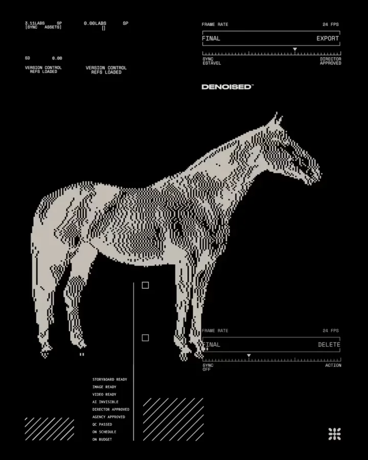

The offer is buried
Visitors arrive with intent, then spend the first few seconds trying to understand what the business actually does.
We write, design and build fast digital experiences for brands that need a page, storefront, dashboard or internal tool to do a real job.
One offer, clean proof, fast load, tracked from the first click.
Start the flow
A good build makes the offer obvious, reduces friction and gives your team a clean way to read what visitors do next.
Visitors arrive with intent, then spend the first few seconds trying to understand what the business actually does.
Ads, creators and search often point to generic pages instead of pages built around the promise in the click.
Heavy pages hurt trust before copy or design gets a chance to work.
Every small copy change becomes a developer task, so the site slowly falls behind the business.
Clicks, forms, purchases and drop-offs are not wired cleanly, so decisions turn into guesswork.
We start with the action the page needs to drive, then shape copy, layout, code and tracking around that job.
The same team handles the message, interface, build and measurement layer, so the final page feels like one system.
Audience, offer, proof, traffic source and the action the page must drive.
Headlines, page flow, objections, CTAs and the copy blocks that remove friction.
Responsive layouts, visual rhythm, component states and handoff-ready screens.
Frontend, CMS, commerce, forms, integrations and content structures.
Events, pixels, analytics views and launch checks before traffic starts moving.
QA, speed checks, redirects, post-launch fixes and a practical improvement list.
We keep the stack understandable for clients: fast to launch, easy to own and strong enough for the business case.
Best when a brand needs speed, custom interaction, SEO control and room to grow into tools or commerce.
Best when the team needs a polished marketing site they can update quickly without calling a developer for every change.
Best when product discovery, buying flow, merchandising and campaign pages need to work together.
Best when the site has many pages, resources, products or landing pages that your team needs to manage cleanly.
Best for lightweight portals, dashboards and workflows where spreadsheets are becoming too slow or messy.
Best when you need to see form starts, purchases, scroll depth, campaign source and drop-offs after launch.
Each scope includes copy direction, interface design, development, speed checks, SEO basics and launch tracking.
A sharp home base for the company, its offer and its proof.
A fast page for launches, ads, creator traffic or lead capture.
A commerce experience that helps people find, trust and buy the product.
A lightweight internal product when a spreadsheet, Notion board or manual process is slowing the team down.
A clean measurement layer for a site that already exists but is hard to read.
We do not add unverified performance claims. We build the measurement layer so the next round of decisions can be based on real behavior.
These products come from the same thinking we bring to client builds: cleaner workflows, readable data and interfaces teams actually use.
A brand audit product that reviews a site, social presence and paid layer to find leaks in the customer path.
The creator CRM we use to track briefs, approvals, contracts and campaign reporting.
A content calendar and approval workflow built for teams that need faster feedback and cleaner asset movement.
Yes. We can build inside your existing identity, sharpen the web expression or recommend brand changes only where the page needs them.
Yes. We shape the page message, CTAs, section order and proof blocks so design and development are not carrying unclear copy.
Yes. We often build landing pages for content systems, creator campaigns, paid media and launch calendars.
Not always. If Webflow or Shopify gets the job done faster and cleaner, we will say that. Custom code is for cases that need it.
You get a handoff, tracking map and post-launch recommendations. We can also stay on for optimization or new pages.
Send the current site or the page you want to build. We will review the offer, traffic source and next action before scoping.
Send the current link, campaign brief or tool idea. We will give you a sharp read on the action the page should drive, the build type that fits and the tracking it needs from day one.